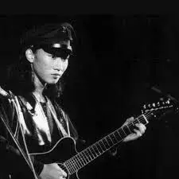
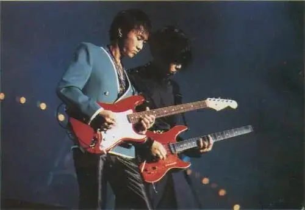
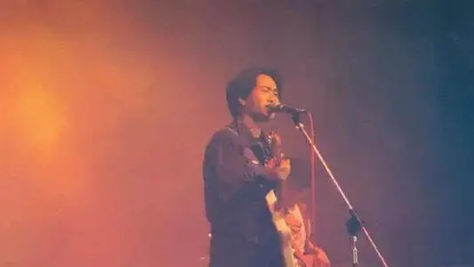

家驹，你还好么
1993年的今天，在昏迷了近一周后，来不及一声告别，你便永远的离开了这个世界。
只有31岁！
在这个有着无限想象的年纪，这是一场多么令人心碎的悲剧。
家驹去世后，beyond和黄家驹的声名一度火爆，并一直持续到今天。
《光辉#岁月》、《海阔#天空》、《真的爱你》.....这些歌一度成为KTV和选秀比赛必备曲目。
很多向来喜欢以小众来标签自己的文青，便开始说beyond是因为家驹的离奇去世才变的这么火，beyond是一支严重过誉的乐队。
事实上，我要告诉大家，beyond是一支被严重低估的乐队，因为家驹唏嘘短暂的一生折射的是香港音乐界甚至整个华语艺术创作圈的心酸和无奈。
如果你真正用心去了解家驹和他的作品，你才能明白，《光辉#岁月》、《海阔#天空》为什么beyond能创作出来，其他歌手就不行？
你也一定会被这条灰色的轨迹所鼓舞和感动，因为家驹我心目中是最具有行动力、勇气和远见的理想主义者。
beyond的第一张专辑叫做《再见理想》。

很多人不明白，为什么一出来就要再见。
事实上，《再见理想》的背后，是黄家驹和beyond六年多地下音乐的总结。
这个专辑中有13首曲目，如果你打开这张专辑，也一定会很吃惊。
这张专辑充满了前卫的气息，既有纯音乐，也有和声作品。
既有外语歌，也有粤语歌。
艺术摇滚、后朋克、新浪潮、重金属......这俨然是中国的平克.弗洛伊德。
这六年多，出于对音乐的那份热忱，几个年轻人一边打着零工，一边发狂般地进行练习和创作。
转眼，个个都是奔三的人了。

可他们所热爱的音乐并未受到香港的欢迎，未来何去何从？
最后，家驹倡导大家自己录一个专辑出来。
于是，从唱片的包装设计，到录制配唱，到找唱片行寄卖等等，完全他们自己一手包办。
所以，这张专辑的音乐充满了不被理解的孤独、失落，同时也饱含着他们继续坚持下去的希望和决心。
但是，他们究竟能走多远，他们并不知道。
黄家驹是乐队的灵魂，这并不仅因为他的才华，更因为他的领导力和变革意识。
家驹曾在采访中说过”我正在抱怨一样我不满意的事/东西，我尽量去改变它；但我不断地抱怨但我又不改变，那就只是抱怨.“
所以，黄家驹并未选择抱着理想孤傲地死去。
从1986年开始，黄家驹开始尝试着将自己的音乐创作变得更偏流行一些。

终于，一曲歌颂两安关系的《大地》获得成功。
随着beyond变得越来越受欢迎，他们也受到早期歌迷的诟病，骂他们是摇滚叛徒，选择了与市场和庸俗妥协。
事实上，beyond在风格上的确妥协了，并没有之前那么凌厉和先锋，为了曝光度他们也出席了很多自己不喜欢的节目。
但是beyond从未忘记自己心底里的理想，他们在大众口味和自己的音乐追求中寻求着一种平衡。
在这种创作张力中，beyond坚持原创，坚持自己的思考。
面对香港娱乐圈的虚浮，他们认为”现在的流行乐坛，价值观严重扭曲，因为歌手往往要出席不同的社交应酬、拍电影、出席游戏节目等等，一切与音乐无关的工作及活动，可说是毫无意义“。
所以，beyond在《现代舞台》和《俾面派对》中批评很多人为了名利做了奴隶。
面对圈内有势之人的嘴脸，他们在《不可一世》中呐喊”谁愿压抑心中怒愤冲动,咒骂这虚与伪与假,从没信要屈膝面对生命,难道世间真的没有公道....“
更多时候，黄家驹和beyond用自己充满诚意的作品告诉香港人：”音乐不是娱乐那么简单，是生命里面一个节奏，音乐应该有很多种类，有很多性格，有很多色彩，有很多不同的感情，不同文化在里面，音乐是艺术！.....不论你是一个多么繁忙的人、怎么样顾著赚钱的人，都不可以没有音乐“。

他们的创作反对刻意为之，坚持要想感动别人首先要感动自己，所以他们的创作异常真诚，会将自己感受到的、思考的，用歌声唱出来。
而一个人面对的生活非常复杂，不仅仅是爱情，还有很多事情。
所以，beyond的创作中有歌颂母亲的《真的爱你》，也有歌颂农民的作品，更有着许多的公共表达，比如说《光辉#岁月》、《the great wall》以及隐喻大录和香刚关系的《爸爸妈妈》......
滑动下方
查看完整诗词
▼
农民
作词：刘卓辉 作曲：黄家驹
演唱：Beyond
忘掉远方是否可有出路
忘掉夜里月黑风高
踏雪过山双脚虽渐老
但靠两手一切达到
见面再喝到了熏醉
风雨中细说到心里
是与非过眼似烟吹
笑泪渗进了老井里
上路对唱过客乡里
春与秋撒满了希冀
夏与冬看透了生死
世代辈辈永远紧记
忘掉世间万千广阔土地
忘掉命里是否悲与喜
雾里看花一生走万里
但已了解不变道理
见面再喝到了熏醉
风雨中细说到心里
是与非过眼似烟吹
笑泪渗进了老井里
上路对唱过客乡里
春与秋撒满了希冀
夏与冬看透了生死
世代辈辈永远紧记
一天加一天 每分耕种汗与血
粒粒皆辛酸 永不改变 人定胜天
见面再喝到了熏醉
风雨中细说到心里
是与非过眼似烟吹
笑泪渗进了老井里
上路对唱过客乡里
春与秋撒满了希冀
夏与冬看透了生死
世代辈辈永远紧记
这才是真正的音乐人。
但在香港，beyond是一个异类，你如果去翻一些大家耳熟能详的香港艺人，绝大多数的词曲作者都非本人。
这样，他们只能用姣好的面孔和声音演绎好别人的故事和表达，但却很难有完全原创者那样的情感深度。
你听四大天王再多的歌，你只能觉得这些人歌唱的好，人长的帅，但你却很难通过音乐认识他们。
家驹也曾直接指出：现在的年轻人都追逐偶像，却忽略了音乐本身。有一部分的偶像，连歌也走音，但是他们得到了一群疯狂的歌迷，纯粹是传媒造势所成，而歌迷追捧偶像往往因为偶像的外表讨好，故此极不健康。
但是家驹和beyond，如果你认真去听他们的作品，他们会像一个大哥哥一样向你走来，你也会走近他们的世界。
音乐是最高形式的语言，你完全理解他们，同时，你也会在他们的作品中得到理解。
所以，我常常听家驹的歌听到深夜，有时候越听越清醒。
在聆听里，我不停地为这位逝去的老朋友惋惜，同时，我也感受到了理解和鼓舞。
这是我心目中的艺术，不在于技术有多高超，更在于内在情感的真实。
因此，家驹真诚的音乐鼓舞了无数人，恐怕家驹还创下了一个记录，至今，没有哪一个歌手，有跨越那么多时代的人写歌送给他，而我在虾米和网易云上至少看到五十首是写给家驹的。

而家驹的这种赤子之心，却注定被商业化的香港所捉弄和辜负。
因此，家驹在他们越来越成功的时候，心底里却一点也不开心。
他们在歌曲中非常失落地唱着”几多天真的理想，几多找到是颓丧“。
而家驹是一个勇敢的追梦人，他们在一般人认为的事业巅峰中却选择转身离开，进军亚洲音乐的高地日本。
到现在，我都为家驹这样的决定感到兴奋。
有太多人沉溺于一时的得失不敢放开手脚去追寻更大的真实。
对于家驹和beyond，能够舍弃来之不易的名利，能够继续坚持《再见理想》里的纯粹，这是一个多么艰难又多么充满远见和勇气的决定。
虽然从1992年去日本到家驹出事只有一年的时间里，但是这一年他们过得非常开心，可以尽情地打雪仗和创作。
也可以和很多一流的日本音乐人合作。
所以，这段时间里，质量极高的《海阔#天空》、《the great wall》以及《情人》被创作出来。
我经常遐想，如果当时家驹还没有出事，他将可以和养活半个香港娱乐圈的中岛美雪交流，也可以和当时正在创作《故宫三部曲》的神思者合作一首纯音乐，也许还可以为《灌篮高手》谱上一首超燃的BGM....还有将来面对后起之秀的mono，家驹又将如何面对......
日本，真的是一个最好的选择。
可能很多人还没有太大概念，我再给大家举一个例子。
家驹在日本只待了一年。
可在家驹去世后，喜多郎每次去香港都会拜祭家驹。
而《海阔&天空》编曲者梁邦彦为纪念家驹创作了《the valley of a swan》。
只和家驹有个几次交流的圣饥魔Ⅱ主唱，得知家驹去世后，为家驹创作了安魂曲，表达了对家驹的惺惺相惜之情和怀念。
滑动下方
查看完整诗词
▼
The Requiem - 聖飢魔II
安魂曲 - 圣饥魔II
作词：DEMON小暮
作曲：DEMON小暮
編曲：聖飢魔II / WRECTOR.H
编曲：圣饥魔II / WRECTOR.H
疲れも見せず微笑んで
不想讓你看見我疲倦的容顏
お前の歌ははずんでいた
我要微笑著彈著你寫的音樂
遥か昔
在樂聲中和你一起感受
少年の時代をともに感じた
昔日的美好時光
無邪気な風のように
還有那風一般
心地良い懐しさも
純潔的少年情懷
ほんの仮り染めか
卻只能得到短暫的快樂
いざ歌わん涙の代りに
干脆用你的歌代替眼淚
もう還らない我が同志の歌を
已經遠走的你我愛的友人啊
別れを告げるすべもなく
還沒有道聲再見
運命の時は突然に
命運就突然帶走了一切
失う時初めて
失去你的瞬間我才看到
その輝きに気づいた
你身上散發的光芒
恋人たちのように
就像對戀人一樣難以忘懷
お前が教えてくれた
你教給我的那一首歌
歌はここにある
一直在我心裡
さあ歌おうお前を描いて
歌唱吧用歌聲描繪出你的微笑
生まれ変わるまで
等待著我們重逢的那一天
さらば我が同志よ
別了我愛的友人
初めて会ったその夜に
不曾想你的生命腳步
命閉ざすとは
停止在我們的初次相識的夜里
ただ歌おうお前の代りに
歌唱吧我要盡情地歌唱
もう還らない
就用你的歌
我が同志の歌を
代替一去不返的你
さあ眠れよ祖国の大地に
好好睡吧望能安眠在祖國大地的懷抱中
生まれ変わるまで
等待著我們重逢的那一天
さらば我が同志よ
別了我愛的友人
日本家喻户晓的乐队”暴风“的鼓手，更是创作了纯音乐《memories》来怀念家驹。
这就是家驹选择日本的原因！
香港没有支撑艺术创作的土壤，而日本却是一片沃土。
这也是香港电影衰败的重要原因。
所以，罗大佑充满感慨地发表了《是谁害死家驹》，这篇文章至今振聋发聩，我将整篇文章分享给大家，也希望我们珍惜身边的原创：
黄家驹是香港人，组合是香港乐队，而且是在香港极出名并且极受欢迎的乐队，为什么会死在日本，而不是死在香港？
Beyond乐队主音歌手黄家驹逝世，最近成了轰动全港的社会新闻。
是的，是社会新闻，而非娱乐新闻。
娱乐新闻是拿来娱乐大众的，来八卦的；出了人命，难道还要拿来娱乐吗？
说黄家驹的死是社会新闻，因为我觉得：黄家驹的死亡，多多少少暴露了香港某种层面的社会，人心的问题。
看了那么多报纸的报导，似乎都只是在弹黄自昏迷，死亡以至出殡的报导，却根本没有人在作一些死亡的前因后果的分析。
为了不让黄家驹白死，谈的主题，就谈“谁害了黄家驹？”
人死了，是谁害了黄家驹？
●死亡前因后果
别怪日本人或富士电视台了。日本的演艺圈制度比香港更健全，电视台的作业比香港更专业，保险或安全制度也不会比香港差。在日本作这个电视节目的演出，对Beyond乐队在日本的发展很重要，我们由富士电视台专派的高层人士到香港解释及道歉的过程， 就知道人家是很专业，很负责任的..
这样说吧！假如今天有taiwan或是大lu的歌手到香港演出发生同样事件，香港的媒体会不会以同样专业的方式来善后呢？
很难说吧？
所以Beyond的歌迷别责怪日本人了；冲动与激情之下，骂骂日本人或是骂骂记者是可以理解的，但是日本人并没有害死黄家驹。上电视是需要的，但不幸除了意外。
● 家驹为何死在日本？
我要问的是，为什么家驹会死在日本，而不是死在香港。黄家驹是香港人，组合是香港乐队，而且是在香港极出名并且极受欢迎的乐队，为什么会死在日本，而不是死在香港？
很简单，因为家驹觉得在香港搞音乐没有什么前途，所以转往日本发展。
“甚么？”你会说：“那么受欢迎，怎么会在港没有前途？”
因为你对音乐太不了解，对香港歌坛太不了解，而且对Beyond乐队太不了解了。
而很不幸的是，香港歌坛是一个极不尊重原创音乐的地方！
日本是一个极尊重原创音乐的市场，市场内排行榜的前一百名之内，原创音乐超过9百分之九十以上。在日本改编歌曲或抄歌，是乐坛及社会最看不起的一种行为。
而这种人家最看不起的抄歌作风的曲子，很不幸，在香港却是最受欢迎的，占粤语市场的百分之七十以上；抄日本歌，抄英文歌,西班牙歌......等。
Beyond乐队坚持原创，因为他们知道这不只是自己风格的问题，而更是一个基本尊严的问题，音乐的基本尊严。
在毫不讲究基本尊严，而只知道如何去讨好媒介，讨好歌迷的香港歌坛， Beyond乐队肯定是无法生存的：因为只是做原创音乐，就起码要消耗乐队一半以上的时间和精力。
而别人只要抄抄歌，张嘴唱唱就得咯。这种完全不公平的竞争之下，Beyond如何在香港生存？
家驹说，他不要当歌舞团，不要演马骝戏，不要被包装至没有自我。
(撰文 罗大佑)
因此，我今天说beyond和黄家驹是极度被低估的乐队，不是吹嘘他们的音乐是世界第一、华人第一，而是他们那种原创精神，那种真诚的表达和愤怒，那条无限唏嘘的探索之路，被今天很多人所忽视。
而这些，不仅是过去、是香港，也是今天之时代华人最缺的东西。
独li的思考，真诚的表达，勇敢的探索，这是为什么黄家驹能创作出鼓舞人心的《光辉岁月》、感人至深的《海阔天空》，甚至，多年前的《the great wall》今天会让很多人害怕！
因为他们真实。
在今天之中国，如果一个自媒体，没有一点公共表达，没有被扇过贴，缝过号，这样的自媒体就不值得大家关注。
”一流的创作培育一流的观众，一流的观众又会鼓舞一流的创作“。
愿我们真正能懂家驹。
-END-
推荐阅读
▼
（点击文字即可获取全文）
27年前，戛然而止的吉他，永不凋零的生命！
这里没有挑逗你眼目情欲的小鲜肉
也没有挑动你肉体情欲的段子
更没有膨胀你今生骄傲的鸡血
我们只在乎那些最质朴真诚的作品
在那里我们才能恢复真正的想象力
我们也坚信这才是我们真正需要的

ID:Six_hundred_hits
长按二维码，一键关注
【六百击】
电影评论
尽情分享朋友圈

微信二维码打赏通道